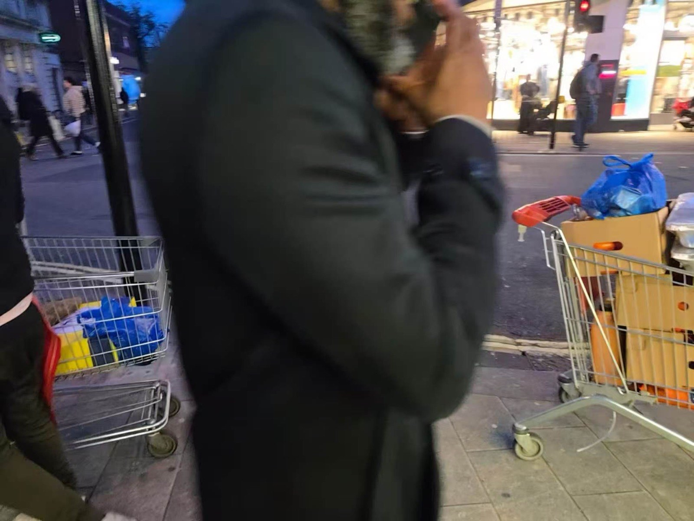
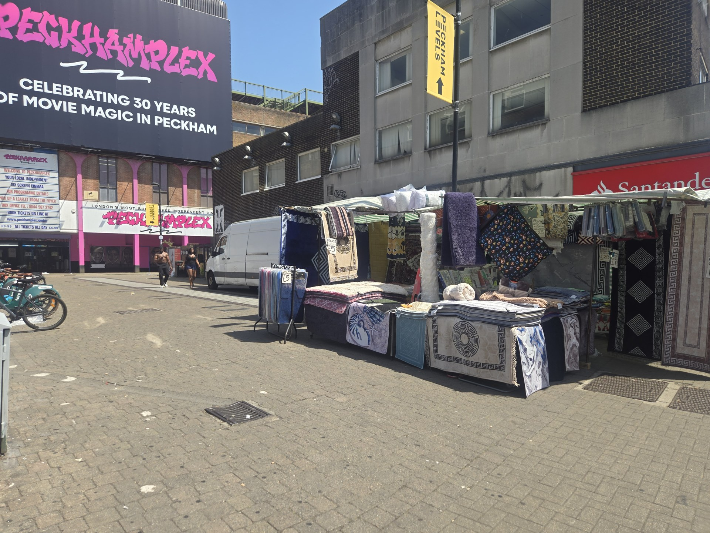
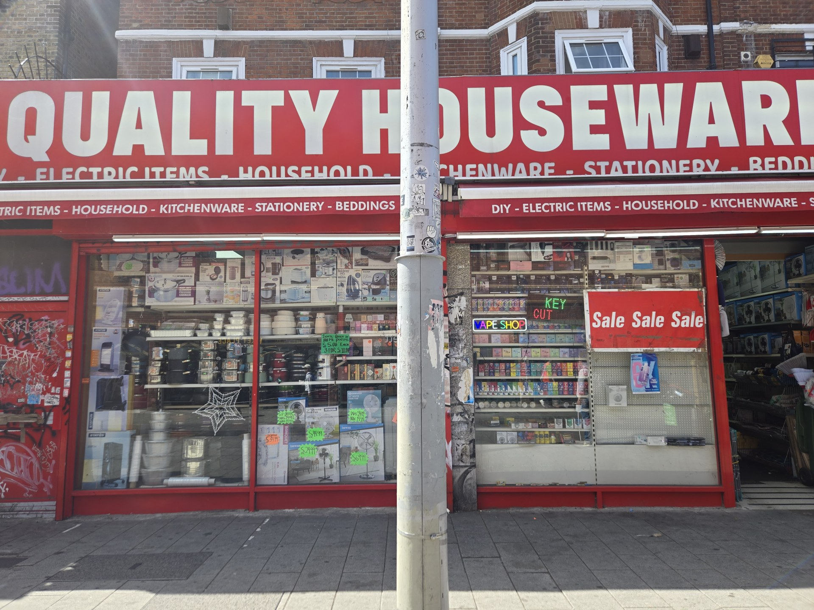

Three photo notes on moving, reusing and displaying. Start with what is visible, then ask what lies behind it.
01 / MOVING THINGS
What the trolley carries
A trolley being moved along the street.

Boxes and bags carried in trolleys.
Across these photographs, the trolley appears with different loads and in different places. Boxes and bags occupy the space usually associated with shopping. The photographs show separate encounters, rather than one trolley followed over time.
02 / REUSING PACKAGING
From container to display
Stacked boxes bring plantains up from pavement level.Plastic crates form a base for another display.
Packaging is also part of the display. Cardboard boxes and plastic crates support produce at different heights, while the goods remain close to the shop entrance. Looking below the fruit reveals the materials holding the arrangement together.
03 / MAKING GOODS VISIBLE
Hanging, stacking, lining up

Textiles hang vertically and lie folded across the stall.

Household goods fill the window in rows and layers.
A textile stall and a household shop use different surfaces to make goods visible. Hanging rugs show patterns from a distance; shelves and stacked boxes bring many products into one window. Each arrangement asks the passer-by to look in a different way.
LOOK & WALK / TAKE THE WEBSITE OUTSIDE
A slower way down the street.
Follow three connected walks: High Street to the railway, south along Rye Lane, then an eastern return to High Street. Each section has observation stops and walking directions.
01
NOTICE / SELF-GUIDED WALK
High Street to the railway.
Look for a box, trolley or other object being used in a different way. Describe what you can actually see before guessing why it is there.
These are invitations to observe public street space, not guided tours or instructions to enter a shop. Ask before photographing people or recording their stories.